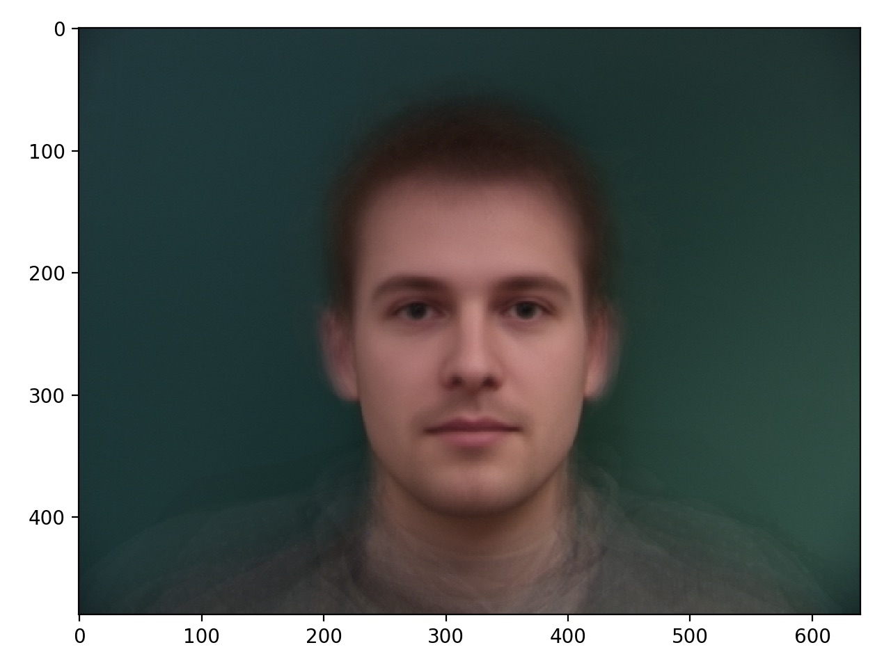

From left to right: My face, Tiger's face, our midway photo.

The midway sequence for this particular morph did not turn out too natural as you can see some fading effect in the background. This was mainly because I placed points at the corner of the image to morph the background as well. A better result can be seen between me and george cloony. I cut out parts of the background for this. There's some funny business between eyebrows, but that is because I didn't properly label points along the eyebrows.


All in all, I think the tiger one turned out pretty well. Depending on where you look, the effect seems pretty natural or very fake. E.g. If you look between tiger's eyes, then the effect is really natural. However, if you look at the top of the head, there is some fading effect that makes it seem a bit faker. These two gifs also demonstrate the difference in quality you get from the number of points you select. I selected about 60 points for the tiger transformation, and around 20 points for the transformation with my brother.
From left to right: My face, Average face of all Danish Computer Scientists, Average shape warped into my face shape, My shape warped into the average shape.
I was pretty surprised at how this turned out - but I have a feeling it was because the labels for my points were not so precise... this can be seen in the way both transformation have deformed nostrils and chins. Thankfully, this isn't the only transformation on average population I've computed, as you will see below when I compute female/male versions of myself.
Caricature turned out very well! As you can see my eye bags and lips are overly defined ande xaggerated. So is my chin.
From left to right: Average female, my face warped into female shape, my face with female appearance, my face with both shape and appearance transformations.
For the life of me, I couldn't get the appearnces to align directly. Therefore, there is some smudging and overlap when mapping the female appearance onto myself. I believe this is because the labelled points for my lips were a bit lower than the actual dataset. But since there were 189 data points for this set, it was unlikely I could change my labelling. All in all, the final results are pretty good. The effect is best around the eyes.
Something interesting I discovered was when I subtracted the male average by the female average. The result were the feature differences ie, the features that separate a man from woman! This was the image I would add on top of my own image to get the apperance seen above.
From left to right: Average male, my face warped into male shape, my face with male appearance, my face with both shape and appearance transformations.
I also made myself much more manly. I find it fairly hilarious that I look more and more cave-man like as I go haha.